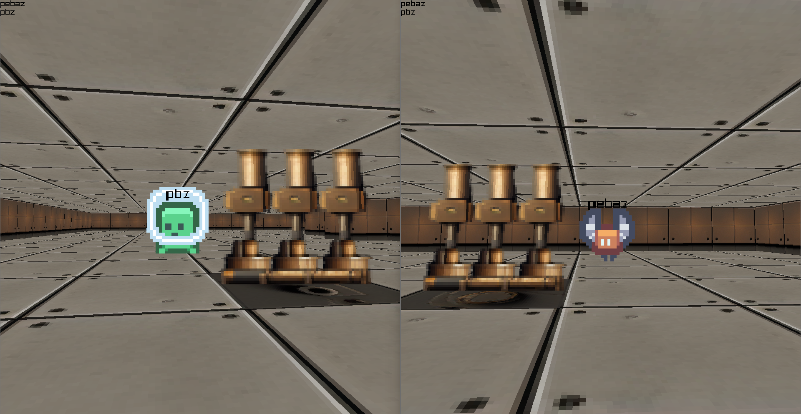
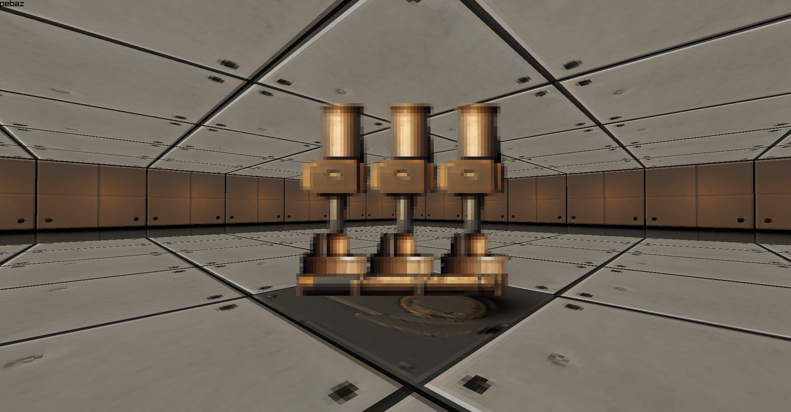
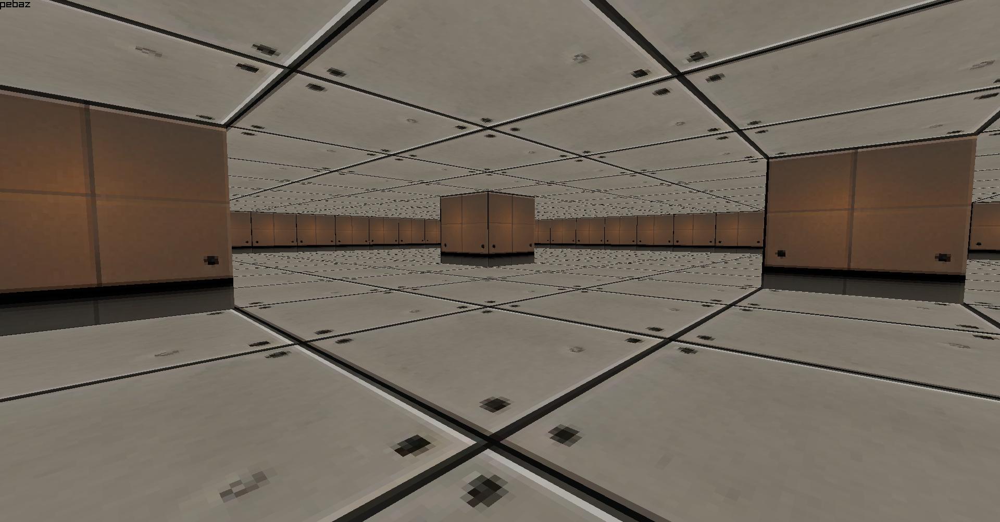
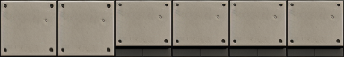
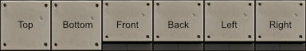

Boxels: 11 Years Of Learning
My Game Programming Journey
2023-07-15

It's taken me a lot of personal development to get to the point where I could even finish something I'd call a "game". Boxels is not that. Other than walking around, there is nothing to iteract with in the gameworld. Instead, I would consider this project to be an extensible base upon which to build more functionality later. For instance, the barebones entity system can be extended to support picking up items or adding vegetation to the world.
For the longest time I worked on "games" only to the point of seeing something on screen or achieving a particular technical accomplishment and I would table the project for later.
I created boxels in 15 day's time working in the evenings and weekends for a total of approximately 30 hours of work on 12 separate days.
3D audio took me almost an entire day. Physics took me an entire day. Networking took me 3 days and I rewrote it 3 times. I tried 2 different networking techniques to no avail: a public rendezvous server for NAT Punchthrough and using TCP and UDP together.
Wire protocol vs message protocol.
I rapid prototyped the project using Kenny's free assets. This helped make the beginning of the project more enjoyable as there was something to render on screen from day one.
TCP
%%{
init: {
'logLevel': 'debug',
'theme': 'default',
'themeVariables': {
'cScale0': '#A0522D',
'cScale1': '#8A3324',
'cScale2': '#6B8E23',
'cScale3': '#8A9A5B',
'cScale4': '#9EA587',
'cScale5': '#E97451'
}
}
}%%
timeline
title Timeline of Project Boxels: Week 1
Day 1 [7/3/23]: Raylib hello world example up and running
Day 2 [7/4/23]: Textured boxel model
: Perspective camera
: Boxel <-> Entity collisions
: Walking around in world
Day 3 [7/5/23]: Billboard sprites
: Entity <-> Entity collisions
Day 4 [7/6/23]: Attempted Rendezvous Server for NAT punchthrough
Day 5 [7/7/23]: Attempted using TCP & UDP together
: Adopted TCP event transport
: Added message protocol
: Multiple players connected
Day 6 [7/8/23]: Created game object model
: Moving entities over network
%%{
init: {
'logLevel': 'debug',
'theme': 'default',
'themeVariables': {
'cScale0': '#A0522D',
'cScale1': '#8A3324',
'cScale2': '#6B8E23',
'cScale3': '#8A9A5B',
'cScale4': '#9EA587',
'cScale5': '#E97451'
}
}
}%%
timeline
title Timeline of Project Boxels: Week 2
Day 7 [7/9/23]: Players see each other
Day 8 [7/11/23]: Created stoppable asynchronous Task system
Day 9 [7/12/23]: 3D audio concept
: Gamepad input
: Rewrote networking to use task system
Day 10 [7/13/23]: Player name labels
: Clients receive map with 6-sided boxels
: 3D audio complete
Day 11 [7/14/23]: Networked physics with FCL
Day 12 [7/15/23]: Non-player entities
: Created test map with AI generated textures
: Generated final build using Nuitka
- Python, Raylib, and a bunch of other libraries
- From-scratch TCP socket networking
- By-hand 3D audio
- ChatGPT as a coding assitant (both more and less useful than people think) Took me all of my 11 years of practice and an AI assistant to do this in 13 days.
- Python's dynamic typing was really difficult when the project got larger. I couldn't believe the sensation. It was as if as soon as the project got to be slightly larger than I could hold in my brain, I literally felt something fall out of my working memory and I had to go and find what it was and get it back in there.
There is no cross-platform way to get the MTU in any language!

Boxels refer to a nomenclature I have developed over the years:
- Pixels: containers for a specific color in a 2D image
- Voxels: volumetric data
- Bloxels: isometric 2.5D voxel sprites
- Boxels: textured cubes large enough for one game entity to stand in
Libraries Used:
- Raylib (windowing, rendering, input, audio, timing)
- Flexible Collision Library (collision detection & response)
- Pydantic (marshalling events back and forth)
- MessagePack (compressing events back and forth)
- MeowHash Python (bindings to MeowHash written by me)
- Nuitka (compiling the game to an executable)
The design of the game involved a client that handles player input, sound, resource loading, and graphics, and a server that would handle the gameworld simulation with physics, player -> entity tracking, and map generation.
TODO(pbz): Create mermaid diagrams for this stuff.
Asynchrony was harnessed through the creation of a stoppable task type that took advantage of Python generators to yield at key stopping points in the thread handler function. Cleanup code could then examine which checkpoint was last yielded to see what resources needed to be freed. The server transport, client handler, and client transport all used the task type in order to run code in a separate thread. All the usual Python threading caveats apply, although a useful feature of the task class was a built in way to send and receive messages from outside and inside the task. This provided a very flexible base upon which to build complex raw socket handling code while utilizing Python's ability to get parallelism with IO tasks.
TODO(pbz): Create mermaid diagrams for this stuff.
Both the client and the server made use of a custom networking facility that used raw TCP sockets. To send structured data back and forth, an event/messaging model was created by using Pydantic models serialized to JSON and encoded with MessagePack which greatly reduced their size. Events were effectively type checked as constructing one with incorrect data types was impossible using Pydantic.

TODO(pbz): Create mermaid diagrams for this stuff.
Events also took advantage of the mixin class design pattern by inheriting from a quick update type that would demarcate that event as eligible for deduplication in situations where the network was unable to keep up with the amount of those events being sent. This worked extremely well and made it so that only one player input or entity update event was ever sent over the wire. Since the events already used Pydantic, adding a new event type was as simple as inheriting one or two classes and adding annotated fields.
TODO(pbz): Create mermaid diagrams for this stuff.
The game object model was maintained by the server and mirrored on the client. Modifications to the model during runtime were communicated via one-shot or frame-by-frame events. The map was only update upon modification and the current position of entities and connected players was sent every frame. The object model was simple in that there were only ever 3 types, one for the player, entities, and boxels. More types would have eventually been needed to structure and store more data, however, as dictionaries formed the backbone of the client and server's game object storage.
TODO(pbz): Create mermaid diagrams for this stuff.
On the server, connections were tracked by address and handled in their own task.
The client
The server
Object Model Data Model
Graphics were rendered using Raylib
Input was gathered using Raylib. Gamepad input was extremely easy to obtain and manage.
The 3D boxels themselves were loaded from a mesh created in Blender containing 6 quads made of 2 coplanar triangles, each with UV coordinates mapped to a spritesheet laid out with room for 6 textures along the X axis. The boxel model was loaded once but then each unique combination of boxel side textures was drawn to an image and uploaded to the GPU for use during rendering. In this way, boxels using the same texture could be batched by Raylib and there was ever only 1 mesh in play aside from the quads submitted by Raylib for billboard sprites, fonts, and debug geometry. When drawn to an image during runtime, they would look like this:


Specifying side textures to cache used these combinations:
- All sides
- Top, rest of sides
- Top, bottom, rest of sides
- Top, bottom, left, right, front, back